Every percussion instrument you will find in an orchestra, all 59 of them, from the timpani to the wood block, the ratchet and the wind machine. Tap any button to hear it. Choose your level: beginners meet the instruments, intermediate players learn how to play them, and advanced players study where they appear in the repertoire.
The tuned kettledrums at the back of the orchestra, and usually the most important percussion part.
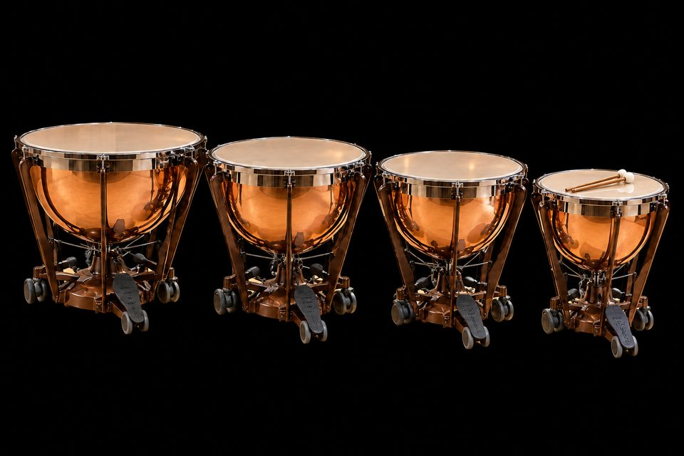
Tap a drum
Timpani (Kettledrums)
WHAT IT IS
Big copper bowls with a drumhead on top. Unlike most drums, each one plays a real note, and a foot pedal changes the note.
HOW TO PLAY IT
Strike about two to four inches in from the rim, not the center, which sounds dead. Use a relaxed, lifting stroke that pulls the sound out of the drum. Rolls are fast single strokes, not buzzes. Learn to tune by ear from a reference pitch, and to muffle with the fingertips of the free hand.
IN THE REPERTOIRE
Core excerpts include the octave Fs in the scherzo of Beethoven's Symphony No. 9, the pounding pedal C that opens Brahms's Symphony No. 1, the C and G solo in Strauss's Also sprach Zarathustra, and the pedal glissandos in Bartók's Concerto for Orchestra. Berlioz asks for four timpanists to play distant thunder in the Symphonie fantastique.
Standard set
Four drums: 32", 29", 26" and 23"
Tuning
A pedal changes the head tension, and so the pitch
Mallets
Felt, from soft to hard; wood for special effects
Patterns
Drums 12
The unpitched and lightly pitched drums of the orchestra and band.
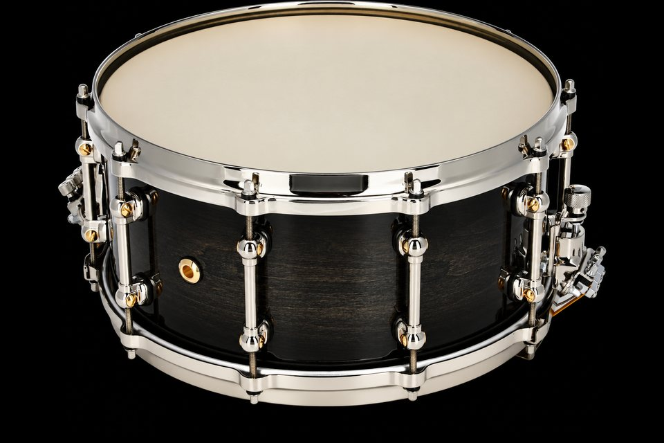
Tap the drum
Concert Snare Drum
WHAT IT IS
The drum with the crisp, buzzing sound. It is the first drum most percussionists learn, and where the rudiments come from.
HOW TO PLAY IT
Play just off center for the fullest tone and move toward the edge for soft passages. The orchestral roll is a closed (buzz) roll: smooth, with no gaps. Keep flams and ruffs narrow, and practice dynamics as seriously as rhythm.
IN THE REPERTOIRE
Standard excerpts include Ravel's Boléro, the snare rolls opening Rossini's La gazza ladra overture, Rimsky-Korsakov's Scheherazade, and Prokofiev's Lieutenant Kijé. The standard étude books are Delécluse's Douze études and Cirone's Portraits in Rhythm.
Size
Usually 14" across, 5" to 6½" deep
Sound
Wires (snares) under the bottom head buzz against it
Patterns
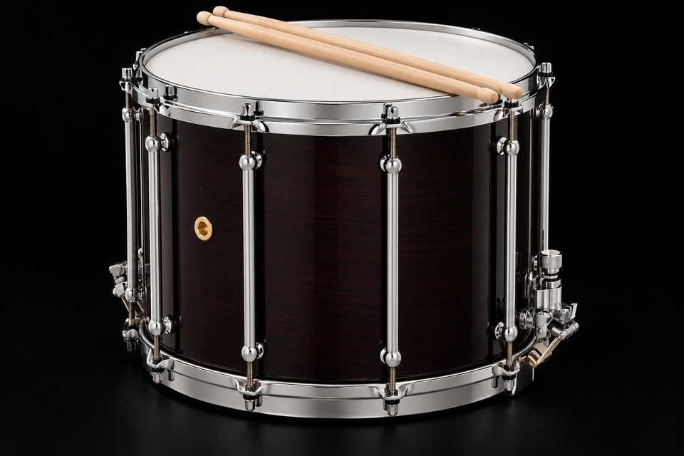
Tap the drum
Field Drum (Parade Drum)
WHAT IT IS
A deep snare drum, like the ones in marching bands.
HOW TO PLAY IT
Played with heavier sticks and an open, rudimental style. The deeper shell needs a firmer stroke to speak.
IN THE REPERTOIRE
Composers call for it when they want a military color that a concert snare cannot give. Check the score's German, French or Italian name (Rührtrommel, caisse roulante, tamburo) to know which drum is meant.
Size
Deeper than a concert snare, often 12" or more
Sound
Snares on; darker and louder
Patterns
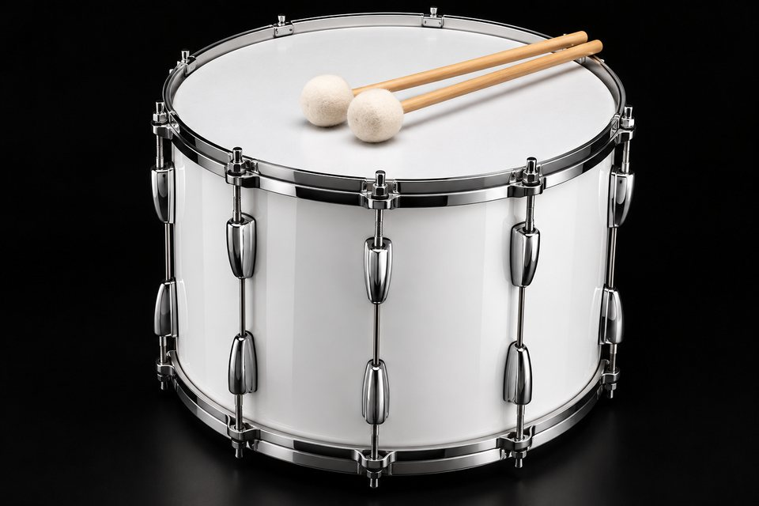
Tap the drum
Tenor Drum
WHAT IT IS
A deep drum with no snares, so it booms instead of buzzing.
HOW TO PLAY IT
Played with sticks or soft mallets depending on the score. Tune it low and let it ring.
IN THE REPERTOIRE
Often confused with marching "tenors" (multi-toms). In orchestral scores it means a single deep drum without snares.
Snares
None
Sound
Deep and hollow, between snare and bass drum
Patterns
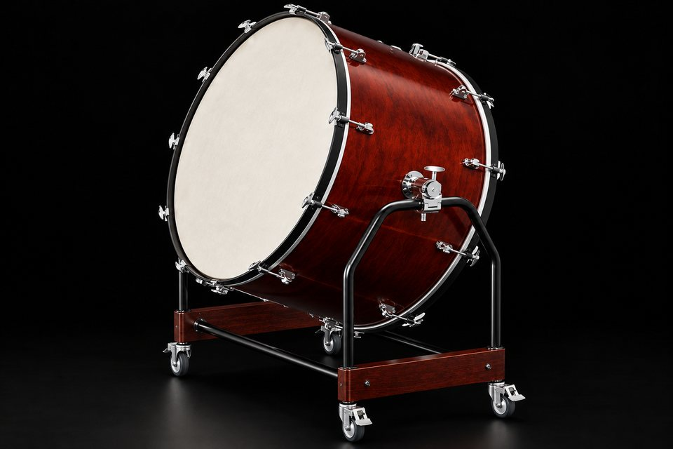
Tap the drum
Concert Bass Drum (Gran Cassa)
WHAT IT IS
The biggest drum in the orchestra. It can rumble very softly or hit so hard you feel it.
HOW TO PLAY IT
Strike slightly off center with a large, soft beater, using a glancing stroke. Control the length of each note by muffling with the knee or free hand. Roll with two matched beaters on opposite sides of the center.
IN THE REPERTOIRE
Famous parts include the violent off-beat strokes in the "Dies irae" of Verdi's Requiem and the bass drum in Stravinsky's The Rite of Spring. Note lengths and muffling are as important as the notes themselves.
Size
About 32" to 40" across
Stand
A tilting stand; played standing
Patterns
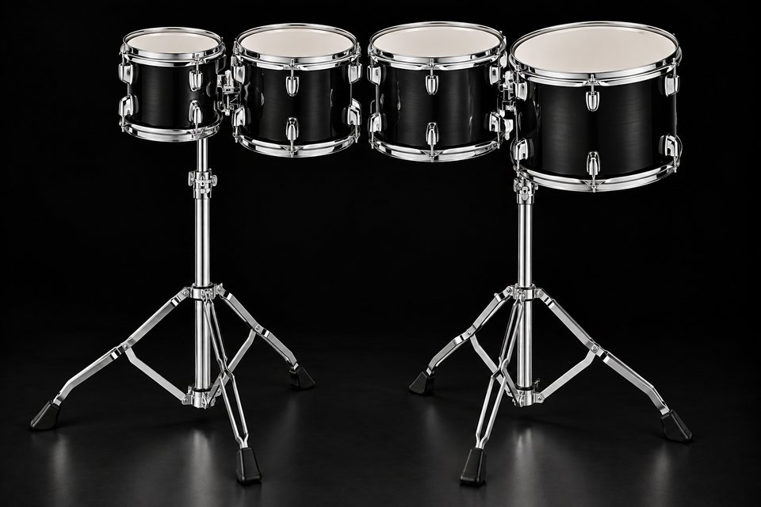
Tap a drum
Concert Toms
WHAT IT IS
A row of drums from high to low, for melodic drum parts.
HOW TO PLAY IT
Set them up in a line or an arc like a keyboard, so you can move smoothly between them. Tune them to clear, distinct intervals.
IN THE REPERTOIRE
Common in band literature and contemporary scores. Check the part for specific pitches or relative high-to-low notation.
Set
Usually four to eight drums, high to low
Heads
Often single-headed
Patterns
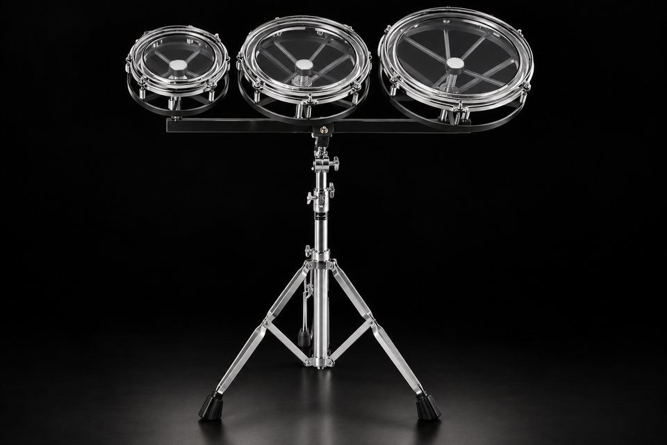
Tap a drum
Roto-Toms
WHAT IT IS
Drums without a shell that change pitch when you spin them.
HOW TO PLAY IT
Spin to tune between phrases. Because there is no shell, the sound is short and focused.
IN THE REPERTOIRE
Used in contemporary scores that need quickly retunable drums, and as a practice tool for timpani ear training.
Made of
A drumhead on a frame with no shell
Tuning
Rotating the drum raises or lowers the pitch
Patterns
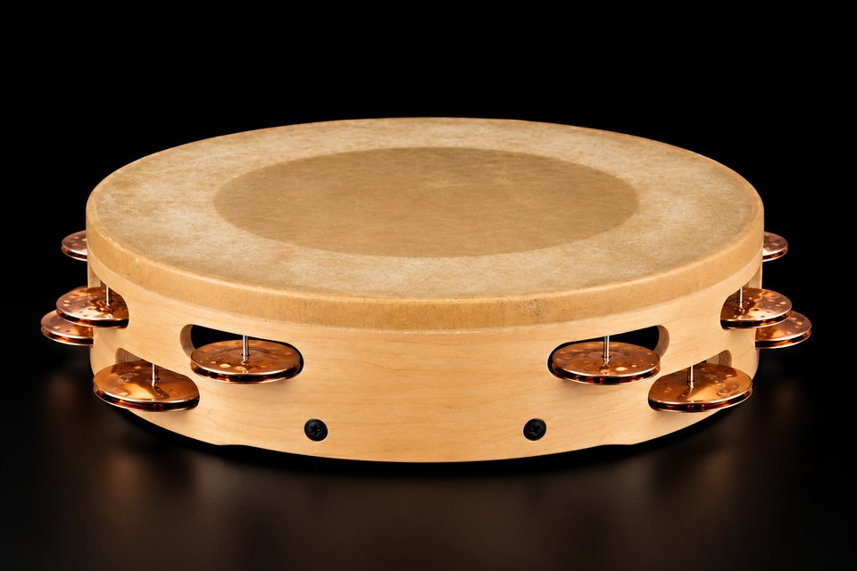
Tap the head or jingles
Tambourine
WHAT IT IS
A round frame with jingles that ring when you shake it or tap it.
HOW TO PLAY IT
Hold it at an angle so the jingles stay quiet until you strike. For soft notes, tap near the rim with the fingertips. For fast, loud rhythms, use the knee-and-fist technique. Rolls are either shaken or done with a moistened thumb run around the edge.
IN THE REPERTOIRE
Standard excerpts include Dvořák's Carnival Overture, Bizet's Carmen, and the "Trepak" from Tchaikovsky's The Nutcracker.
Made of
A frame with metal jingles, usually with a head
Techniques
Striking, shaking, thumb roll, knee-and-fist
Patterns
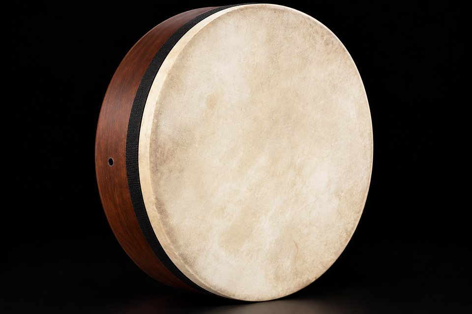
Center = low · Edge = high
Frame Drum
WHAT IT IS
A big, flat drum held in the hand, one of the oldest drums in the world.
HOW TO PLAY IT
Played with the fingers and palms for many different tones, from deep bass to high slaps.
IN THE REPERTOIRE
Appears in contemporary and world-music-influenced scores, and is a whole tradition of its own in the Middle East, North Africa and Italy.
Made of
A wide, shallow frame with a head, no jingles
Patterns
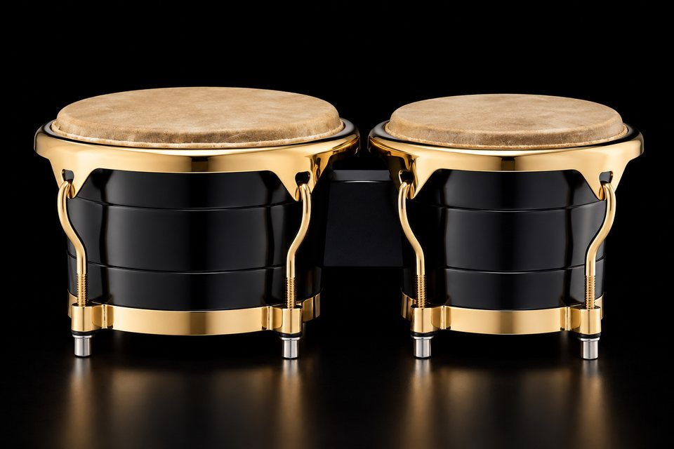
Tap a drum
Bongos
WHAT IT IS
Two little drums joined together, played with the fingers.
HOW TO PLAY IT
The basic pattern is the martillo, played with the fingertips on the edge of the heads.
IN THE REPERTOIRE
Heard in the orchestra in scores like Bernstein's West Side Story, where Latin percussion carries the dance numbers.
Set
Two small joined drums: macho (small) and hembra (large)
Patterns
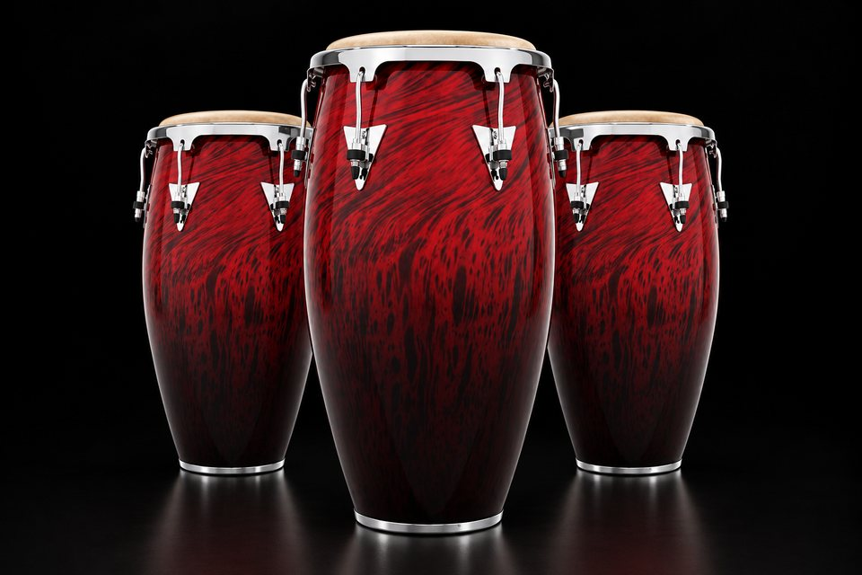
Tap a drum
Congas
WHAT IT IS
Tall drums played with the hands, from Afro-Cuban music.
HOW TO PLAY IT
Learn the four basic strokes: open tone, slap, bass tone and muted tone. The tumbao is the basic pattern.
IN THE REPERTOIRE
Used in orchestral pops, film scores and Latin-influenced concert music. Authentic playing comes from the Afro-Cuban tradition, so study the style, not just the notes.
Set
Tall drums: quinto, conga and tumba, high to low
Strokes
Open tone, slap, bass, muted
Patterns
Timbales
WHAT IT IS
Two shiny metal drums played with thin sticks, very bright and loud.
HOW TO PLAY IT
The cáscara pattern is played on the metal shell. Rim shots and quick fills are the timbales' signature.
IN THE REPERTOIRE
Featured in Bernstein's West Side Story, especially the "Mambo".
Set
Two shallow metal-shell drums, often with a cowbell
Played
With thin sticks, including on the shells (cáscara)
Patterns
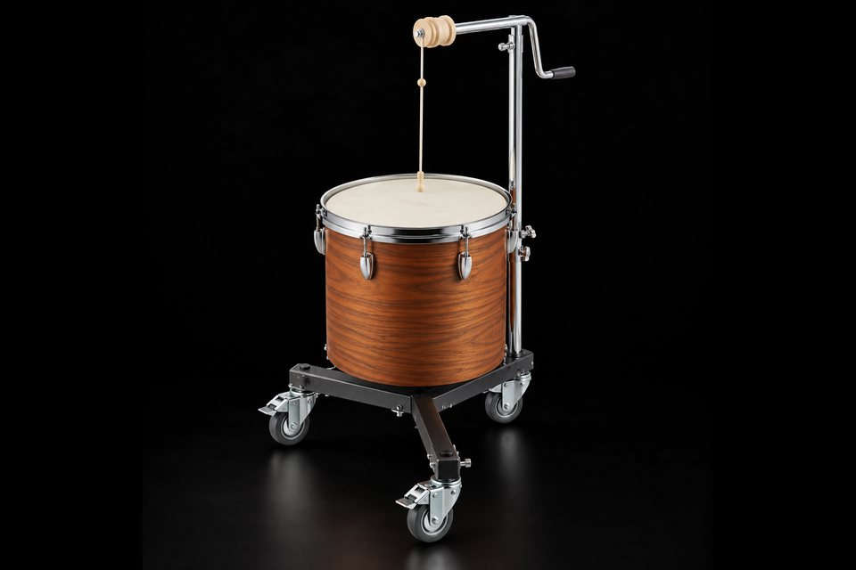
Tap to roar
Lion's Roar (String Drum)
WHAT IT IS
A drum with a rope through the middle. Pulling the rope makes a growling roar.
HOW TO PLAY IT
Pull the rope with a damp or rosined cloth. Speed and pressure change the pitch and volume.
IN THE REPERTOIRE
Heard in Varèse's Ionisation, one of the first works written only for percussion ensemble.
Made of
A drum with a rosined cord through the head
Played
Pulling a rosined cloth along the cord
Patterns
Keyboard percussion 7
Pitched instruments laid out like a piano keyboard, played with mallets or hammers.
Tap the bars
Xylophone
WHAT IT IS
Wooden bars that make a bright, dry "tock" when you hit them with mallets.
HOW TO PLAY IT
Strike the center of the bar, or the near edge of the upper (black-key) bars when moving fast. Keep the wrists loose and the mallets low. Rolls are fast single strokes.
IN THE REPERTOIRE
Excerpts include Saint-Saëns's Danse macabre (the skeletons' rattling bones), Gershwin's Porgy and Bess, Kabalevsky's Colas Breugnon overture and Shostakovich's The Golden Age. Ragtime solos from the early xylophone era are great technique builders.
Bars
Rosewood or synthetic
Range
About 3½ octaves, sounding one octave above written
Mallets
Hard rubber, plastic or phenolic
Patterns
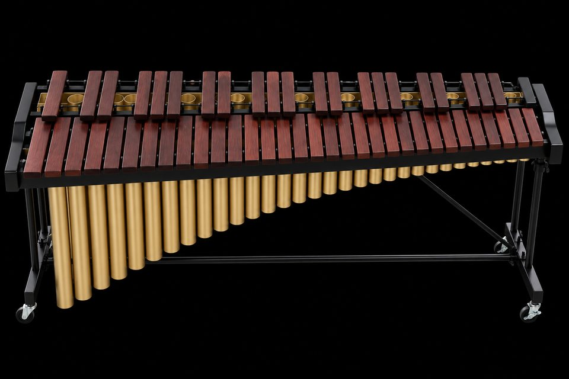
Tap the bars
Marimba
WHAT IT IS
The deep, warm cousin of the xylophone, with long tubes under the bars that help it ring.
HOW TO PLAY IT
Four-mallet playing is standard. The main grips are Stevens, Burton and traditional cross grip. Roll with independent or alternating strokes, and keep rolls smooth and even.
IN THE REPERTOIRE
Solo repertoire includes Ney Rosauro's Concerto for Marimba and the works of Keiko Abe. In the orchestra it appears mostly in 20th-century and contemporary scores.
Bars
Rosewood or synthetic, with tube resonators
Range
4⅓ to 5 octaves, sounding as written
Mallets
Yarn, soft to hard
Patterns
Glockenspiel (Orchestra Bells)
WHAT IT IS
Small steel bars that ring like tiny bells over the whole orchestra.
HOW TO PLAY IT
Use a light stroke with brass mallets for brilliance or plastic for a softer sound. Let notes ring unless the music says to damp them.
IN THE REPERTOIRE
Famous parts include Dukas's The Sorcerer's Apprentice and Papageno's magic bells in Mozart's The Magic Flute.
Bars
Steel
Range
About 2½ octaves, sounding two octaves above written
Mallets
Brass, hard plastic or rubber
Patterns
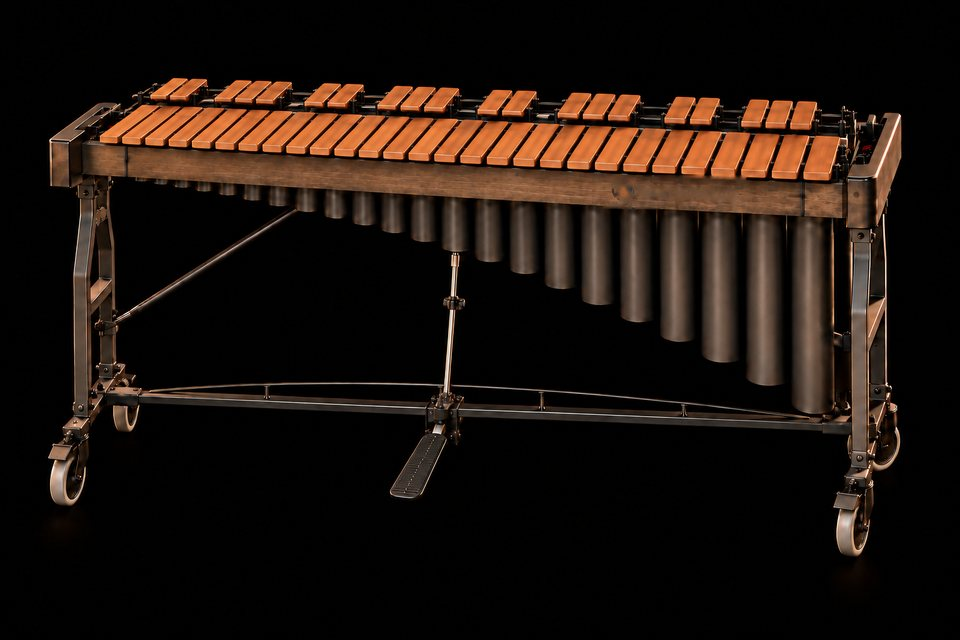
Tap the bars
Vibraphone
WHAT IT IS
Metal bars that ring and shimmer, with a motor that makes the sound wobble.
HOW TO PLAY IT
Pedaling is as important as mallets: pedal like a pianist to connect chords. Dampen single notes with a mallet (mallet dampening). Four-mallet Burton grip is common.
IN THE REPERTOIRE
Alban Berg used it in his opera Lulu. In jazz, Lionel Hampton, Milt Jackson and Gary Burton defined the instrument.
Bars
Aluminum, with resonators and a motor
Range
3 octaves, F3 to F6
Pedal
Down lets notes ring; up damps them
Pedal
Patterns
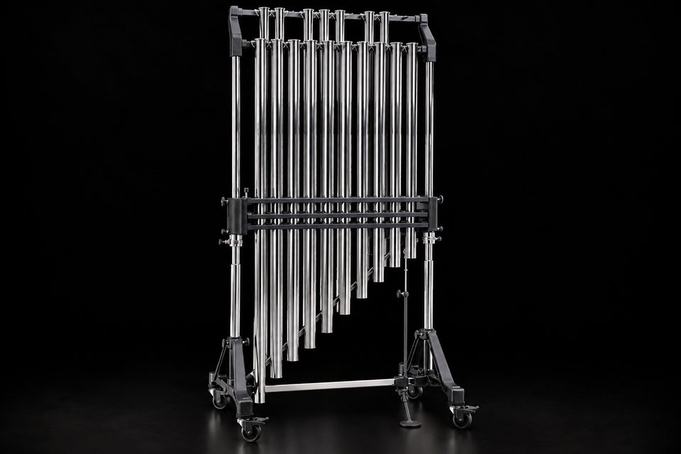
Tap the tubes
Chimes (Tubular Bells)
WHAT IT IS
Long hanging tubes that sound like church bells. Tap any tube, from the long low C on the left to the short high F on the right.
HOW TO PLAY IT
Strike the top cap at a slight angle with a rawhide hammer. Use the damper pedal to keep notes from blurring together.
IN THE REPERTOIRE
Chimes stand in for church bells in the finale of Berlioz's Symphonie fantastique, Tchaikovsky's 1812 Overture and "The Great Gate of Kiev" in Mussorgsky's Pictures at an Exhibition.
Tubes
18 brass tubes hung in a frame, fully chromatic
Range
1½ octaves, C4 to F5
Played with
Rawhide or plastic hammers, struck on the top cap
Pedal
Damper pedal stops the ringing
Patterns
Crotales (Antique Cymbals)
WHAT IT IS
Tiny tuned cymbals with a pure, high, ringing tone.
HOW TO PLAY IT
Use brass or hard plastic mallets and let them ring. Bowing the edge with a bass bow gives a pure, sustained tone.
IN THE REPERTOIRE
Debussy wrote for antique cymbals in Prélude à l'après-midi d'un faune. Bowed crotales are common in contemporary scores.
Made of
Small, thick bronze discs, each tuned to a note
Range
Usually 1 or 2 octaves, sounding two octaves above written
Played
With hard mallets, or bowed
Patterns
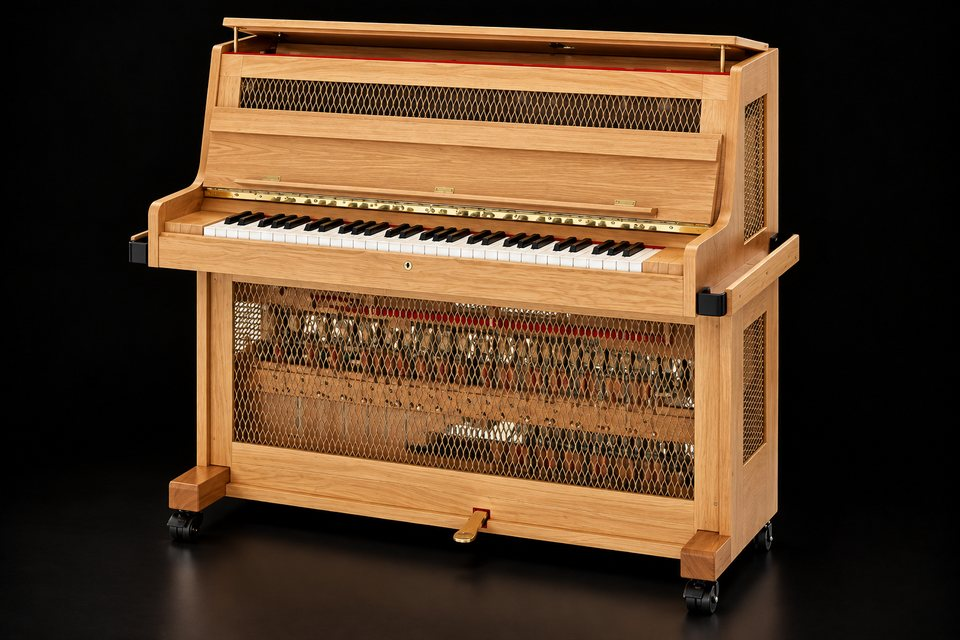
Play the keys
Celesta
WHAT IT IS
It looks like a small piano, but it sounds like a music box.
HOW TO PLAY IT
Played at the keyboard like a piano. It is quiet, so it needs space in the orchestration to be heard.
IN THE REPERTOIRE
Most famous in the "Dance of the Sugar Plum Fairy" from Tchaikovsky's The Nutcracker, and in Bartók's Music for Strings, Percussion and Celesta.
Made of
A keyboard whose hammers strike steel plates
Played by
Usually a keyboard player, sometimes a percussionist
Patterns
Cymbals and gongs 5
Metal instruments that crash, shimmer and roar.
Crash Cymbals (Pair)
WHAT IT IS
Two big cymbals clapped together for the biggest crash in the orchestra.
HOW TO PLAY IT
Offset the cymbals slightly so the edges do not meet all at once, which traps air and sounds dead. Let them ring and turn outward, then damp against the body when the note should stop.
IN THE REPERTOIRE
The finale of Tchaikovsky's Symphony No. 4 and his Romeo and Juliet fantasy-overture are standard audition excerpts.
Size
Usually 16" to 20"
Played
Two cymbals held by straps and struck together
Patterns
Suspended Cymbal
WHAT IT IS
One cymbal on a stand. Its rolling swell builds up to big moments.
HOW TO PLAY IT
Roll with two soft mallets on opposite edges of the cymbal for a smooth swell with no attack. Choose the mallet for the sound: yarn for a wash, stick for a ping.
IN THE REPERTOIRE
Bowing the edge with a bass bow is a standard contemporary technique. Careful crescendos that peak exactly on the downbeat are what conductors listen for.
Mounted
A single cymbal on a stand
Played with
Yarn mallets, sticks, brushes or a bow
Patterns
Finger Cymbals
WHAT IT IS
Two tiny cymbals that make a delicate "ting".
HOW TO PLAY IT
Tap the edge of one against the edge of the other, or strike one with a triangle beater for more control.
IN THE REPERTOIRE
Scores sometimes say "crotales" for these, but crotales are tuned. Check whether a definite pitch is written.
Made of
Two tiny cymbals
Played
Tapped together edge to edge
Patterns
Tam-Tam
WHAT IT IS
A giant hanging gong whose sound blooms and roars after you hit it.
HOW TO PLAY IT
Before a loud stroke, warm up the tam-tam with a very soft touch so it is already vibrating. This avoids a harsh attack and lets it bloom. Damp with the hand or body.
IN THE REPERTOIRE
A single soft stroke in the last movement of Tchaikovsky's Symphony No. 6 is one of the most famous tam-tam notes. It also plays a large role in Stravinsky's The Rite of Spring.
Size
Often 32" to 40" across
Pitch
No single definite pitch
Beater
Large soft beater
Patterns
Tuned Gongs
WHAT IT IS
Gongs with a bump in the middle that each play a real note.
HOW TO PLAY IT
Strike the center boss with a medium-soft mallet. Tuned gongs have a clear pitch, unlike the tam-tam.
IN THE REPERTOIRE
Puccini wrote for tuned Chinese gongs in Turandot.
Made of
Bronze gongs with a raised center boss
Pitch
Each gong plays a definite note
Patterns
Metal accessories 11
Small metal instruments, each with a sound nothing else can make.
Triangle
WHAT IT IS
A bent metal bar that rings with a clear, bright tone.
HOW TO PLAY IT
Hang it from a clip with a thin line so it rings freely. Strike the bottom side or the side opposite the opening. Roll inside one of the closed corners. Choose beater weight for the dynamic.
IN THE REPERTOIRE
Liszt's Piano Concerto No. 1 has such a prominent triangle part that it was nicknamed the "triangle concerto". The third movement of Brahms's Symphony No. 4 is a standard audition excerpt.
Made of
A bent steel rod
Beaters
Metal beaters of different weights
Patterns
Sleigh Bells
WHAT IT IS
A strap of little bells that jingle when shaken.
HOW TO PLAY IT
For precise rhythms, hold the bells still and strike the handle with your fist.
IN THE REPERTOIRE
Sleigh bells open Mahler's Symphony No. 4. They are also the star of Leroy Anderson's Sleigh Ride and Mozart's German Dance "The Sleigh Ride".
Made of
Small closed bells with loose pellets, on a strap or handle
Techniques
Handle hit, shake, roll
Patterns
Cowbells
WHAT IT IS
A bell with no clapper, played with a stick. Bright and clanky.
HOW TO PLAY IT
Strike the mouth for a lower, open sound and the body for a higher, drier sound.
IN THE REPERTOIRE
A Latin percussion staple that appears in pops, film and contemporary scores.
Made of
A steel bell with the clapper removed
Played
With a stick
Kinds
Rock, mambo, cha-cha, bongo bell, agogô, 808
Patterns
Herd Bells (Mahler Cowbells)
WHAT IT IS
Real Alpine cowbells that jingle like a herd of cows on a mountain.
HOW TO PLAY IT
Shake them gently and irregularly, like animals grazing in the distance. They should never sound rhythmic.
IN THE REPERTOIRE
Mahler wrote for them in Symphony No. 6, and Strauss in An Alpine Symphony.
Made of
Alpine cowbells with their clappers
Played
Shaken gently and irregularly
Patterns
Almglocken (Tuned Cowbells)
WHAT IT IS
Cowbells tuned to real notes, so you can play melodies on them.
HOW TO PLAY IT
Laid out like a keyboard and played with medium-hard mallets.
IN THE REPERTOIRE
Common in contemporary orchestral and percussion ensemble scores.
Made of
Cowbells without clappers, tuned to pitches
Played
With mallets or sticks
Patterns
Anvil
WHAT IT IS
A blacksmith's anvil, hit with a hammer. Clang!
HOW TO PLAY IT
Orchestras usually use a steel bar or brake drum that sounds like an anvil. Use a metal beater and let it ring or damp it as written.
IN THE REPERTOIRE
The "Anvil Chorus" from Verdi's Il trovatore, and Wagner's Das Rheingold, which calls for 18 anvils.
Made of
Usually a steel bar or a real anvil
Played
With metal hammers
Patterns
Brake Drum
WHAT IT IS
A part from a car, used as a clanging metal instrument.
HOW TO PLAY IT
Rest it on a padded surface so it rings. Different spots on the drum give different pitches.
IN THE REPERTOIRE
A staple of 20th-century percussion ensemble and contemporary orchestral writing.
Made of
A car's brake drum
Played
With metal or hard sticks
Patterns
Bell Tree
WHAT IT IS
A stack of little bells. Slide a beater down them for a magical, sparkling sound.
HOW TO PLAY IT
Glide a metal beater down the bells for a glissando, or strike single bells for points of color.
IN THE REPERTOIRE
Used for sparkle and magic effects in film, pops and contemporary scores.
Made of
Nested bells stacked on a rod
Played
A beater glides down the bells
Patterns
Mark Tree & Wind Chimes
WHAT IT IS
A row of hanging metal rods. Brush your hand across them for a shimmering sweep.
HOW TO PLAY IT
Sweep with a finger or thin rod. Damp with the palm when the sound should stop.
IN THE REPERTOIRE
Common in film and pops scores. Not the same as the bell tree, though scores sometimes mix up the names.
Made of
Hanging rods, tubes, bells or pieces of graded size